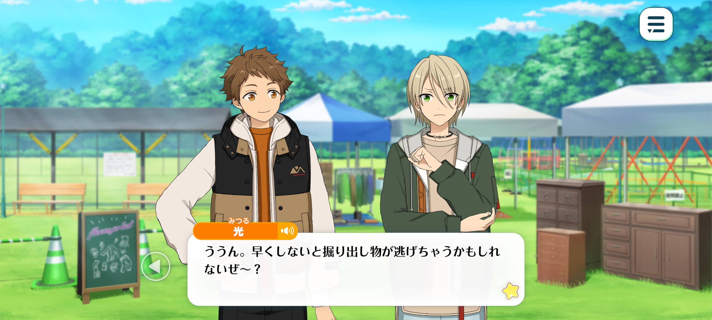
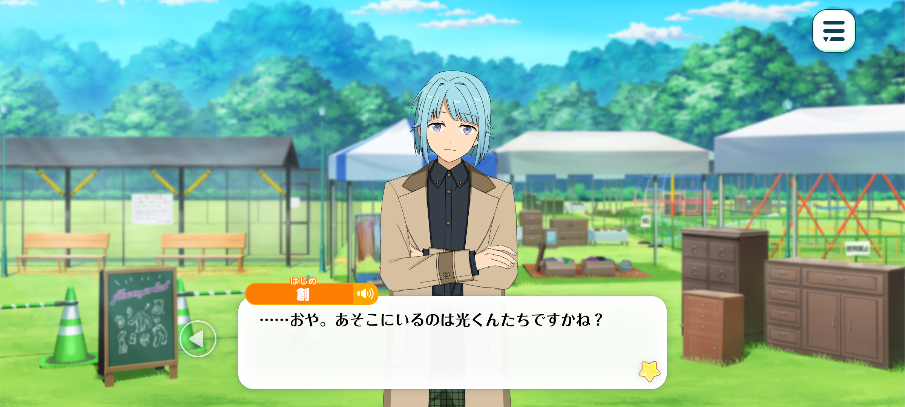
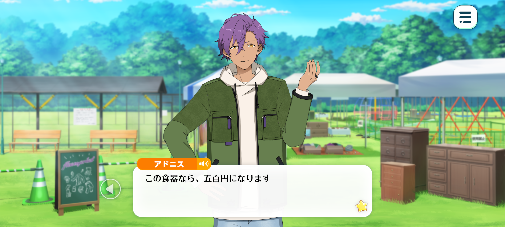
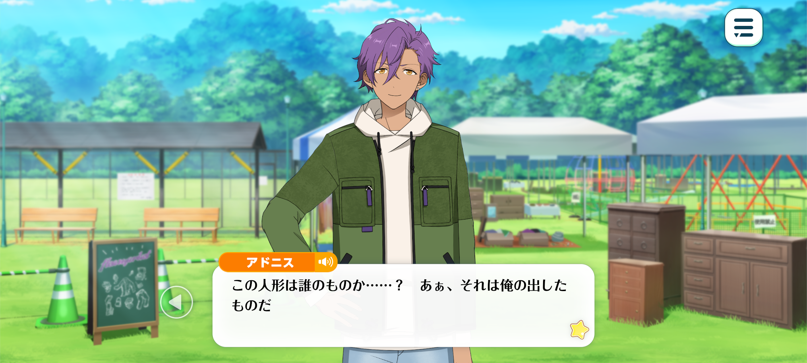

Scout! Dolly Knight
Memories Of A Doll – Chapter 4



Aira: H-hey, wait up, Tenma-senpai!
There aren't that many people around right now, so I don't think we need to rush…!
Mitsuru: Nah, nah! If we don't hurry, someone else might snatch up all the bargains, right~?
What did Ai-chan come here looking for? Let's find it together!
Aira: Umm, well… I'm actually looking for a room divider for the dorm. I thought I'd give it a trial run, so… I guess the exact reason I want one isn't all that important…
Mitsuru: Huh~? What d'you need a room divider for~?
Aira: Uh… Y-you see… I don't really want the senpais I share a room with to see me…
I'm worried they'll think I’m actually a total slob. And since I only just narrowly avoided getting fired, I'm scared they won't like me anymore… You know?
Mitsuru: Hmm~? I think you should just be yourself, Ai-chan! Don't try to hide who you are!
But if you want a room divider, then we'll find you one! It'd be a real shame to come all the way to a flea market and not buy anything, right? ♪
Hey, that one looks kinda like what you're after! What d'you think?
Aira: T-that's a gigantic chopping board!
I mean, it does look pretty useful, but I don't cook for myself, so it'd be a waste to buy it…! Should we try looking somewhere else?
Mitsuru: Aww, darn! I thought I'd found a bargain straight away!
There's still loads of other stuff to look at! I wonder if I can find some second-hand clothes that'll look good on me~♪

Hajime: …Oh? There go Mitsuru-kun and Shiratori-kun.
I'm glad those two are having such a good time. I can feel their energy even from all the way over here, with the way they're dashing around the market.
I wonder if I can find a bargain, too. I should have a look around. If I spot something good, I'll have to snap it up…♪
Oh my! This little rabbit figurine looks just like Nii-chan. I wonder if I should buy it for him as a present?
And this one looks so serious. It reminds me a little of Tomoya-kun when he's telling someone off…♪
Fufu. The longer I look at them, the more fond of them I become.
This must be what Otogari-senpai was talking about. Could this be a little like animism? I almost feel as though there's a spirit living inside this figurine.
(Whispering) "Hey, Mitsuru. Don't run around like that! You're going to hurt yourself~!"
(Whispering) "Now, now, Tomo-chin. There's nobody around, so it's alright to let him run about."
…Or something like that. Ahaha, playing pretend like this reminds me of when I used to play with dolls with my brother and sister.
Otogari-senpai brought a doll to sell, too. He brought it all the way from overseas, so I'm sure it holds lots of memories for him. I hope it finds a new home here at the market.

Adonis: This tableware is 500 yen.
Thank you for your purchase. I'm sure its previous owner would be happy to know that you'll take good care of it.
…Alright. That's another sale.
Shino's things seem to be particularly popular. Perhaps it's because he takes such care to package them beautifully. As for my doll… Maybe it's because he's rather old, but nobody seems to be interested in him.
Should I have made him look a little more presentable?
When I was younger, I may not have treated you as well as I should have. I know it's a little late, but… I'm sorry.
…Hm? Ah, my apologies. A customer had come by, and I hadn't noticed…
Anzu? What brings you to a flea market?
I see. You happened to be passing by on your way home after a meeting with a television station? It is a little out of your way, but it makes for good exercise. That's a good thing.
? Why are you laughing? Did you happen to see me talking to this doll?
Ah. I suppose it's not something you see every day, so you must find it amusing… I thought you would look at me strangely. You're very kind, Anzu.
Since you've come all this way, why don't you have a look around? Shino, Tenma, and I are running this stall together.
Shino's things are the most popular. They're practically unused and in excellent condition. Their designs are simple and versatile, so people of all ages and either gender can make use of them.
Tenma has brought some shoes and clothes he no longer wears. Quite a few of them are fashionable, but they might not be suitable for you, Anzu. I'd recommend them to anyone who wears the same size as him.
…That doll? Ah, he's one of the things I'm selling.
He holds many memories for me, so I was rather reluctant at first.

In Japan, there's an old belief called animism, which says that spirits reside in all sorts of objects.
That's why I hesitated. After spending so many years together, I couldn't help wondering if he might resent me for letting him go.
But Shino and the others are helping him find a new home. I never doubted that this was what would be best for him.
Thanks to them, I was able to put him up for sale without any regrets.
What would make this doll happiest is to be loved. I want to find someone who will cherish him just as much as I did.
That's the least I can do for him as his previous owner.
…You hope he finds a new home? I'm glad to hear you say that. Thank you for letting me share my thoughts with you.
It's a little embarrassing to talk about these things, but I don't think I should keep them to myself. I have wonderful friends who are willing to listen and take my feelings seriously.
…Perhaps I should talk to Shino and the others about how I feel, too.
Ah, you have somewhere else to be? That's quite alright. Please don't worry about me.
Thank you for taking the time to listen.